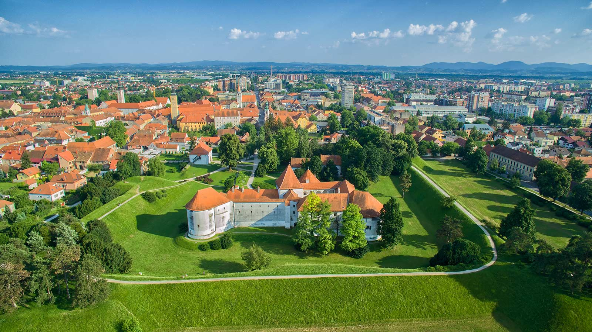
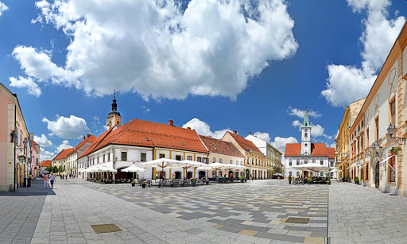

Varaždin je grad u sjeverozapadnoj Hrvatskoj smješten uz obalu rijeke Drave, povijesno, kulturno, obrazovno, gospodarsko, sportsko i turističko središte Varaždinske županije, najstarije županije u Hrvatskoj. Nalazi se na raskrižju četiriju velikih, povijesnih regija: Štajerske, Zagorja, Međimurja i Podravine.
Stari grad Varaždin tvrđava je u Varaždinu i jedna od njegovih znamenitosti. Nalazi se na sjeverozapadnom obodu varaždinske gradske jezgre, a danas je u njoj smješten Gradski muzej Varaždin.
Županija obuhvaća sjeverozapadni dio Hrvatske i u zemljopisnom smislu pripada podravskom pojasu. Prostire se na površini od 1247 km2 na kojoj, prema popisu stanovništva iz 2021. godine, živi 160.264 stanovnika, po čemu je ovaj kraj jedan od najnapučenijih u Hrvatskoj. Ipak u odnosu na prošli popis stanovništva broj stanovnika županije smanjen je za 8,92 %, što je nešto manje od prosjeka Hrvatske (-9,5%).
Iz 19. i početka 20. stoljeća potječe niz gradskih vila, od kojih je najranija klasicistička vila Mueller u Cesarčevoj ulici, dok se veći broj secesijskih kuća nalazi u Kolodvorskoj ulici. Najznačajnija zgrada historicističkog razdoblja je Hrvatsko narodno kazalište, rađeno prema projektima bečkih arhitekata Fellnera i Helmera, poznatih graditelja kazališta u srednjoj Europi.